AI Practice System
Iris Intelligence
A portfolio section for AI-assisted marketing workflows, creative productivity tools, and data monitoring products built around real business scenarios.
AI Practice Library
These projects show how I use AI as an operational capability: turning business needs into structured prompts, reusable workflows, content intelligence, and data-driven decision support.
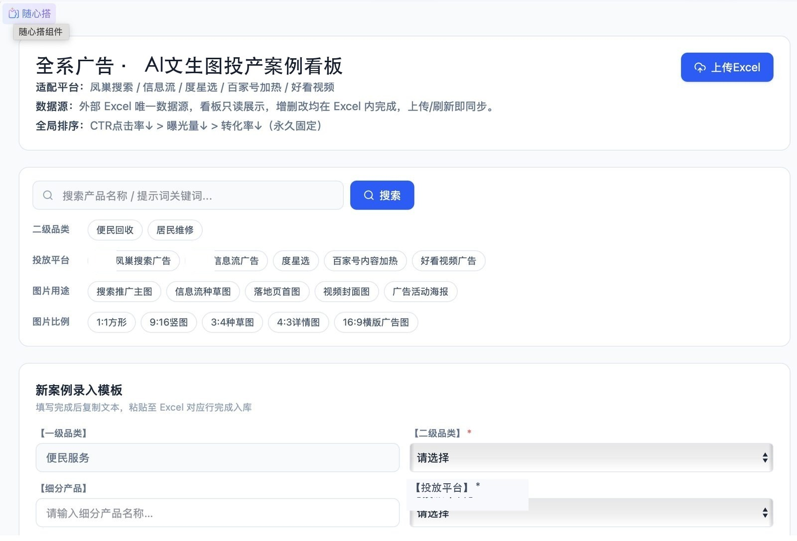
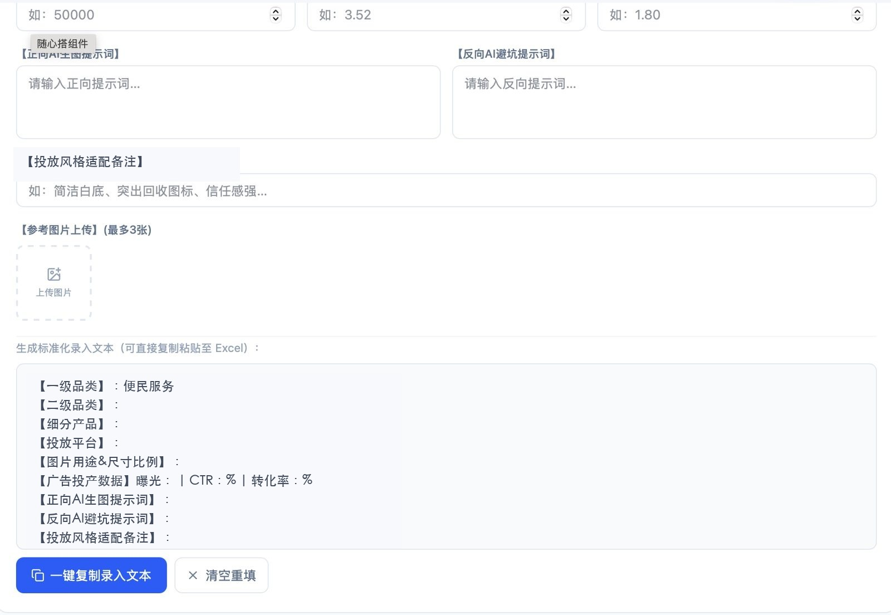
Commercial AIGC Tool
Commercial Text-to-Image AI Agent
Application Name
Commercial Advertising Text-to-Image AI Agent.
Background
In commercial advertising operations, teams need to produce many visual concepts for different industries, platforms, formats, and conversion scenarios. Traditional material production can be slow, fragmented, and heavily dependent on design resources.
AI Model / Workflow
The project uses a text-to-image workflow supported by structured prompt engineering, industry-specific prompt templates, negative prompt fields, image ratio rules, and an accumulated case library for reusable creative references.
Effect
It lowers the threshold for image generation, helps operators quickly create ad visuals for search, feed, landing pages, video covers, and campaign posters, and turns strong prompts into reusable creative assets.
My Role
Chief Planner. I designed the tool logic, prompt structure, case entry framework, and iteration path for improving image generation in advertising scenarios.
商业 AIGC 工具
商业投放 AI 文生图专属智能体
应用名称
商业投放 AI 文生图专属智能体。
应用背景
面向商业投放场景，运营团队需要为不同行业、平台、尺寸和转化目标快速产出广告创意图。 传统素材生产链路较长，对设计资源依赖较高，也难以快速沉淀可复用经验。
AI 模型 / 工作流
项目以文生图模型为核心，结合结构化 Prompt 工程、行业化提示词模板、反向提示词字段、 图片比例规则和优秀案例库，形成可持续迭代的广告图片生成工作流。
产生效果
降低图片生成门槛，帮助投放运营人员快速生成搜索广告、信息流、落地页首图、视频封面、 活动海报等场景素材，并将优质 Prompt 沉淀为可复用的创意资产。
我的角色
总策划。负责智能体功能逻辑、Prompt 字段结构、案例录入框架和面向广告场景的持续迭代路径设计。
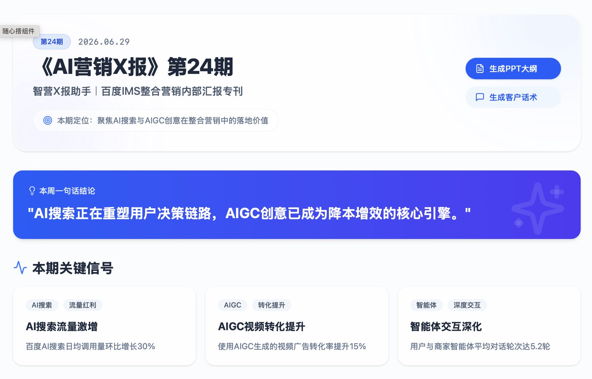
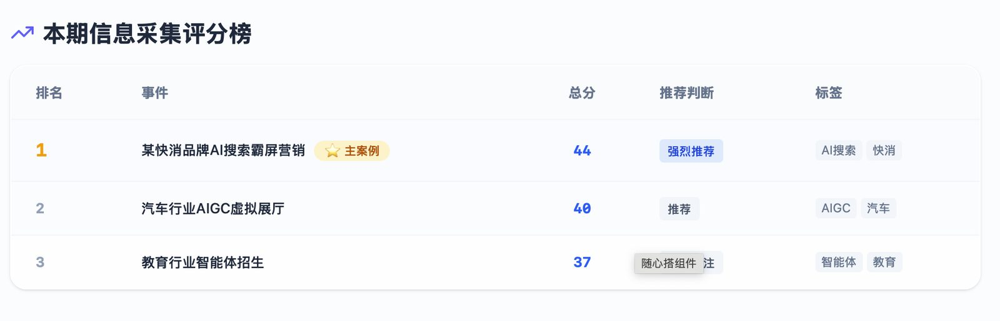
AI Marketing Intelligence
AI Marketing X Report
Application Name
AI Marketing X Report.
Background
AI search and AIGC are reshaping user decision paths, creative production, and campaign conversion. Marketing teams need a lightweight internal report that can translate fast-moving AI signals into practical industry actions.
AI Model / Workflow
The project combines AI-assisted information collection, topic scoring, insight synthesis, and LLM-generated outputs such as PPT outlines and client-facing talking points.
Effect
It helps marketers understand AI trends, judge relevance to their own projects and industries, and quickly convert insights into campaign ideas, client communication, and executable marketing tactics.
My Role
Chief Planner. I designed the report positioning, content structure, signal selection logic, and AI-assisted output paths for marketing use cases.
AI 营销情报产品
《AI营销X报》
应用名称
《AI营销X报》。
应用背景
AI 搜索与 AIGC 正在改变用户决策链路、创意生产方式和整合营销转化路径。 营销团队需要一个轻量化的内部汇报产品，把快速变化的 AI 信号转译为可理解、可讨论、可落地的行业打法。
AI 模型 / 工作流
项目结合 AI 辅助信息采集、议题筛选、价值评分、洞察总结，并通过 LLM 生成 PPT 大纲、 客户沟通话术等可直接进入业务场景的输出。
产生效果
帮助营销人员及时掌握 AI 动向，判断其与自身项目和行业的相关性，并进一步生成 campaign 思路、 客户沟通素材和可执行的整合营销打法。
我的角色
总策划。负责产品定位、内容结构、信号筛选逻辑和面向营销场景的 AI 辅助输出路径设计。
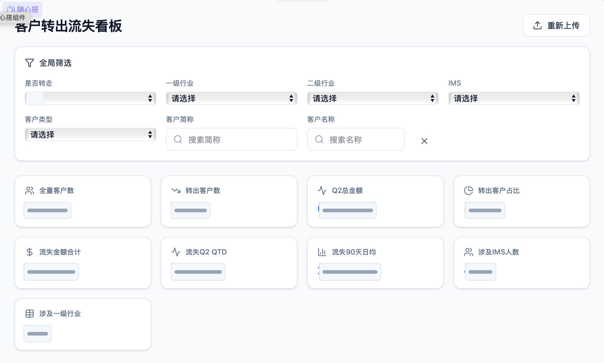
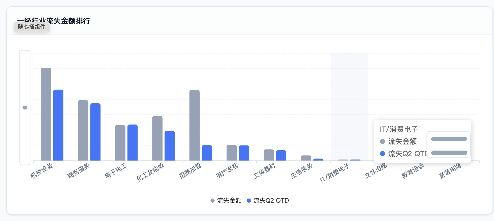
Data Monitoring Dashboard
Customer Churn Dashboard
Application Name
Customer Churn Monitoring Dashboard.
Background
Account teams need timely visibility into customer movement, churn risk, revenue changes, and industry distribution, so that performance changes can be detected before they become delayed business issues.
AI Model / Workflow
The dashboard is built around structured customer data monitoring and analytical views. AI-assisted analysis can support anomaly interpretation, issue prioritization, and follow-up action suggestions.
Effect
It visualizes customer base changes, churn counts, revenue impact, IMS involvement, and industry ranking, helping teams track performance movement and respond with clearer operational priorities.
My Role
Chief Planner. I defined the monitoring dimensions, dashboard structure, business reading logic, and privacy-aware presentation for portfolio display.
数据监测看板
客户流失看板
应用名称
客户流失监测看板。
应用背景
客户运营团队需要及时掌握客户转出、流失风险、金额变化和行业分布等关键动向， 以便在业绩问题滞后暴露之前，提前识别异常并安排跟进。
AI 模型 / 工作流
看板以结构化客户数据监测和可视化分析视图为核心，可进一步结合 AI 辅助分析， 支持异常解释、问题优先级判断和后续运营动作建议。
产生效果
集中呈现客户基本信息、客户数量变化、金额划分、IMS 参与和行业排名等信息， 帮助团队快速判断业绩动向，并形成更清晰的运营跟进优先级。
我的角色
总策划。负责监测指标设计、看板结构规划、业务阅读逻辑梳理，以及作品集展示中的数据脱敏处理。
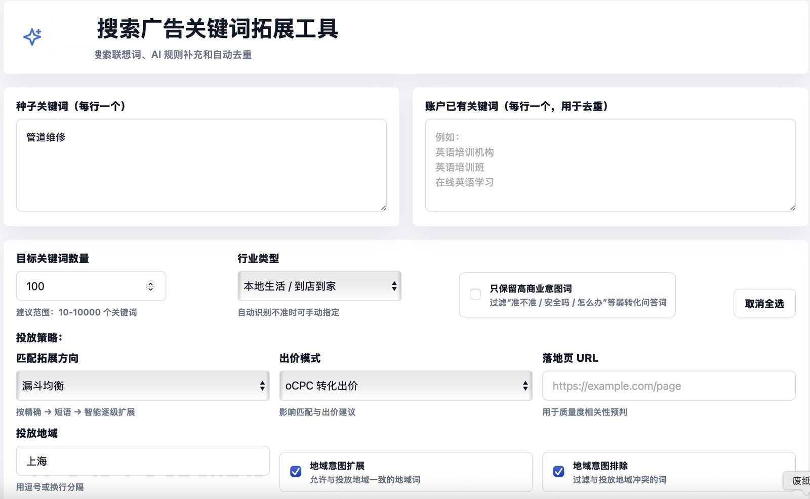
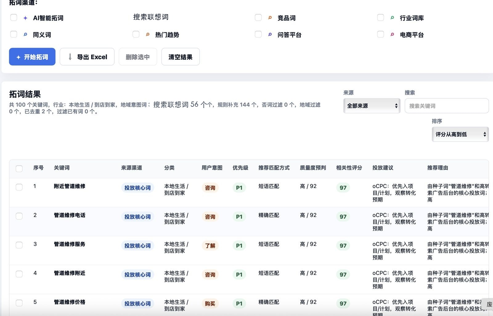
AI Search Advertising Tool
Keyword Expansion Assistant Iteration
Application Name
Search Advertising Keyword Expansion Tool. View live tool
Background
Search advertising teams need keyword expansion that is not only large in volume but also usable for bidding, matching, landing-page relevance, and regional delivery. Generic keyword lists often create noise, duplicated terms, and weak commercial intent.
AI Model / Workflow
I used Codex to support multi-round product iteration, improving the expansion logic through search suggestion terms, industry recognition, commercial-intent filtering, negative keyword filtering, match-type recommendation, quality prediction, region locking, and an East China regional drill-down lexicon.
Effect
The tool improves the accuracy and media-readiness of search advertising keywords, helping users move from seed terms to prioritized keyword lists with source channels, user intent, match suggestions, quality forecasts, relevance scores, and delivery recommendations.
My Role
Chief Planner and AI-assisted product builder. I defined the iteration direction, business rules, keyword evaluation dimensions, and used Codex to accelerate implementation and interface refinement.
AI 搜索广告工具
搜索广告拓词助手迭代
应用名称
搜索广告关键词拓展工具。 查看线上工具
应用背景
搜索广告投放需要的不只是“更多关键词”，而是更适合出价、匹配、落地页相关性和地域投放的可用关键词。 通用拓词结果容易出现噪声、重复词、弱商业意图词和与投放目标不匹配的问题。
AI 模型 / 工作流
我利用 Codex 支持工具的多轮产品迭代，围绕拓词逻辑持续优化：接入搜索联想词， 新增行业识别、高商业意图筛选、否词过滤、匹配方式推荐、质量度预判、地域锁定与华东地域下钻词库。
产生效果
提升搜索广告关键词拓展的准确性与投放可用性，让用户从种子词快速获得带有来源渠道、用户意图、 匹配建议、质量度预测、相关性评分和投放建议的关键词结果。
我的角色
总策划与 AI 辅助产品搭建者。负责迭代方向、业务规则、关键词评估维度设计，并利用 Codex 加速实现与界面优化。
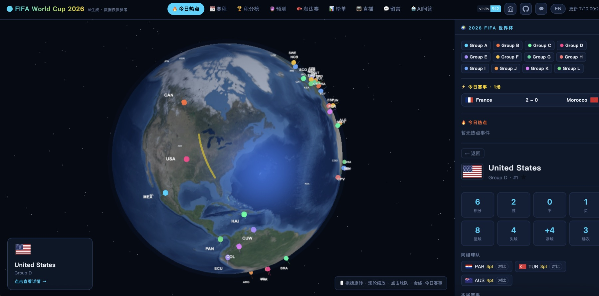
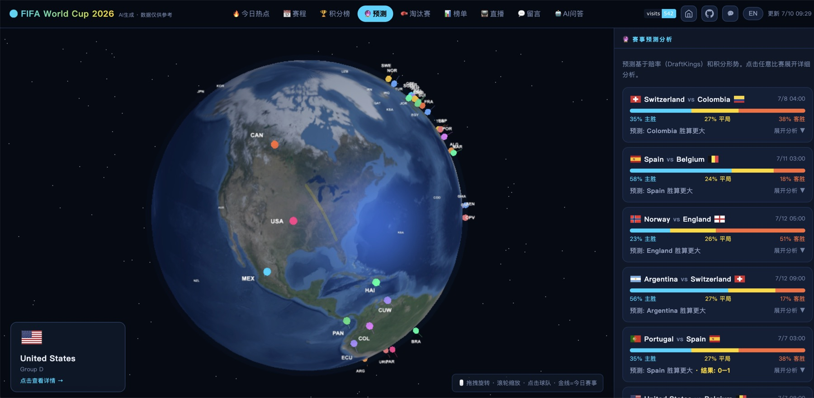
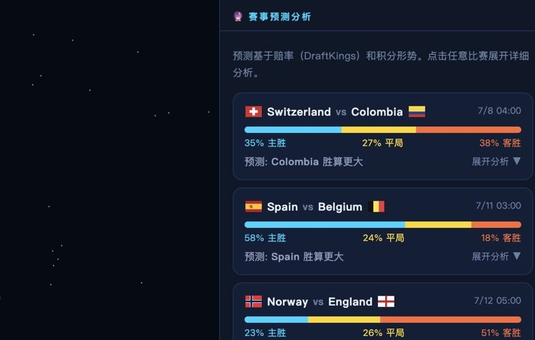
AI Sports Data Dashboard
2026 World Cup Real-Time Dashboard
Application Name
2026 World Cup Real-Time Dashboard. View live dashboard
Background
The 2026 World Cup expands to 48 teams and 12 groups, creating a denser information environment for schedules, standings, team performance, and match predictions. The project turns scattered tournament data into a visual dashboard that can be scanned, explored, and updated in real time.
AI Model / Workflow
The dashboard combines live football data, DraftKings odds, standings logic, and a Claude-powered assistant. Users can enter their own Anthropic API key for chat, and the key is stored only in the local browser.
Effect
A 3D globe maps all 48 teams by group color, with clickable team markers for points and records. Today's matches are connected by gold arcs that jump to match detail pages. The schedule covers the latest plus or minus four days, each match can expand into a full timeline, 12 group tables refresh every 30 minutes, and the prediction module generates win/draw/loss probabilities with detailed analysis.
My Role
Chief Planner and AI-assisted product builder. I planned the data reading logic, interaction structure, bilingual content experience, AI assistant scenario, and dashboard storytelling for sports data exploration.
AI 体育数据看板
2026 世界杯实时看板
应用名称
2026 世界杯实时看板。 查看实时看板
应用背景
2026 世界杯扩军至 48 支球队、12 个小组，赛程、积分、球队战绩和预测信息更加密集。 该项目希望把分散的赛事数据转化为一个可视化实时看板，让用户能够快速浏览、 深入查看并持续追踪赛事动态。
AI 模型 / 工作流
看板结合实时足球数据、DraftKings 赔率、积分榜规则和 Claude AI 助手。 用户可以使用自己的 Anthropic API Key 与 Claude 对话，Key 只保存在本地浏览器中。
产生效果
3D 地球仪标注 48 支参赛队，并按小组着色，点击球队可查看积分和战绩； 今日赛事双方以金色弧线连接，点击弧线可跳转到比赛详情。实时赛程覆盖最近正负 4 天， 点击任意场次可展开进球、换人、黄红牌等完整时间线。12 小组积分榜每 30 分钟自动更新， 同时提供完整积分、净胜球和近期状态；赛事预测模块结合赔率与积分数据生成胜平负概率和详细分析。
我的角色
总策划与 AI 辅助产品搭建者。负责数据阅读逻辑、交互结构、中英文切换体验、 AI 助手应用场景，以及体育数据看板的整体叙事设计。
Practice Reflection
These projects share the same logic: AI is most valuable when it becomes a repeatable workflow. My focus is to connect business scenarios, data signals, prompt strategy, and human judgment into tools that help teams create faster and decide more clearly.